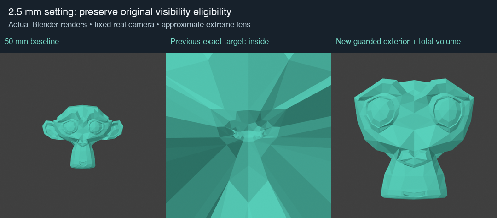
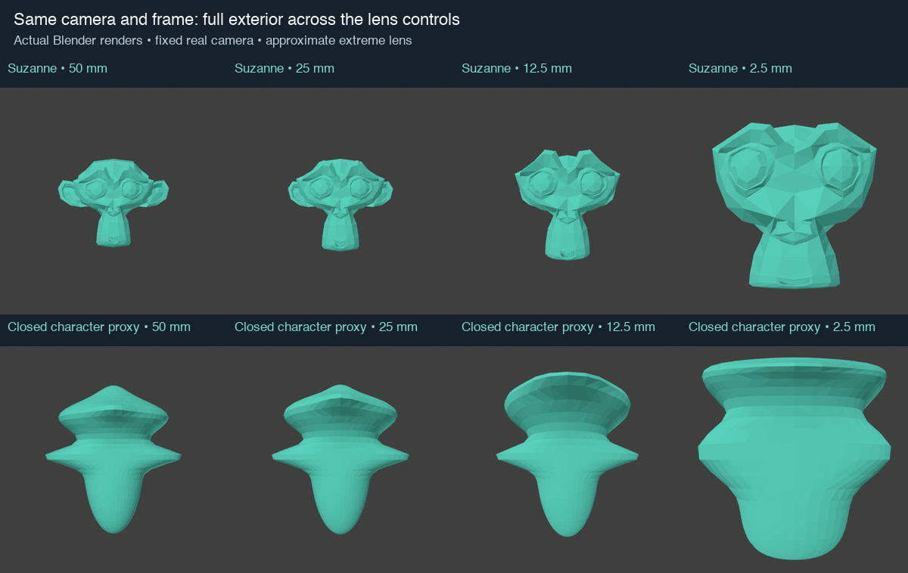
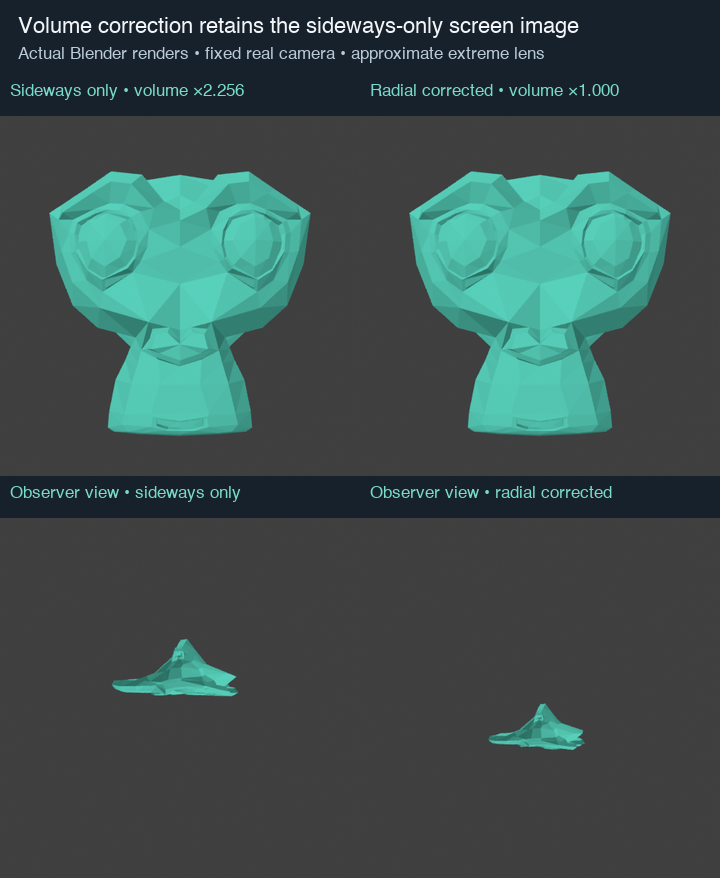

User reference correction: this prototype passed visibility tests but its short-lens appearance was rejected. See calibrated actual-reference comparisons.
Executable research, not installed. Extreme lens appearance is deliberately approximate. Installed CamKeys stays at 60d2015; this is not yet a shipped Uraraka fix.

The algorithm uses original coordinates and the actual perspective frustum. It reduces sideways displacement as the remaining frame margin vanishes. Depth stays unchanged before one positive volume-restoring radial scale; that scale preserves screen coordinates and depth sign.
The real camera, lens and sensor stay fixed in every front render. No crop, camera movement, topology rebuild or cap is used. Source focus-plane scale stays fixed, but silhouette dimensions can change inside the existing frame.

All 507 Suzanne vertices and all 2258 closed character-proxy vertices stay in frame at the shown 2.5 mm setting. The proxy's closed volume ratio is 1.0. The open Head tests use an explicit absolute-fan proxy, not physical enclosed volume.

The independent Blender BVH fixture preserves total closed-sphere volume but changes sampled fixed-ray thickness by up to 46.6%, ray-entry distance by up to 0.933 units, and edge-dihedral angle by up to 29.5°. Total volume does not imply unchanged local shape. Fixed-ray thickness is not matched material-point normal thickness, and dihedral angle is a discrete bend metric—not a claim to emulate a shader.
To retain a specific shader's original curvature/raycast values, investigate a pre-effect reference geometry/attribute path with correct query-space conversion. That is additional material-specific work, not an automatic consequence of this deformation.
Actual near/far clip planes, shifted camera frusta, orthographic views and render borders; weighted falloff and shared companions; native materials/UVs; self-intersections in arbitrary coarse geometry; live Uraraka orbit/zoom/billboard and Windows hardware.
These figures use fixed source-face emission colors. They establish geometry/visibility evidence, not shader fidelity. The second figure is a synthetic closed character proxy, not a render of the live Uraraka scene. No live scene, preferences or installed addon changed.
Derivation, contracts and next steps · Summary · Visibility guard checks · Actual raycast/local-distortion measurements · Dense timing samples · Overview
Projection background: PBRT projective camera models. The bounded deformation and visibility contract are this project's derivation and measurements.